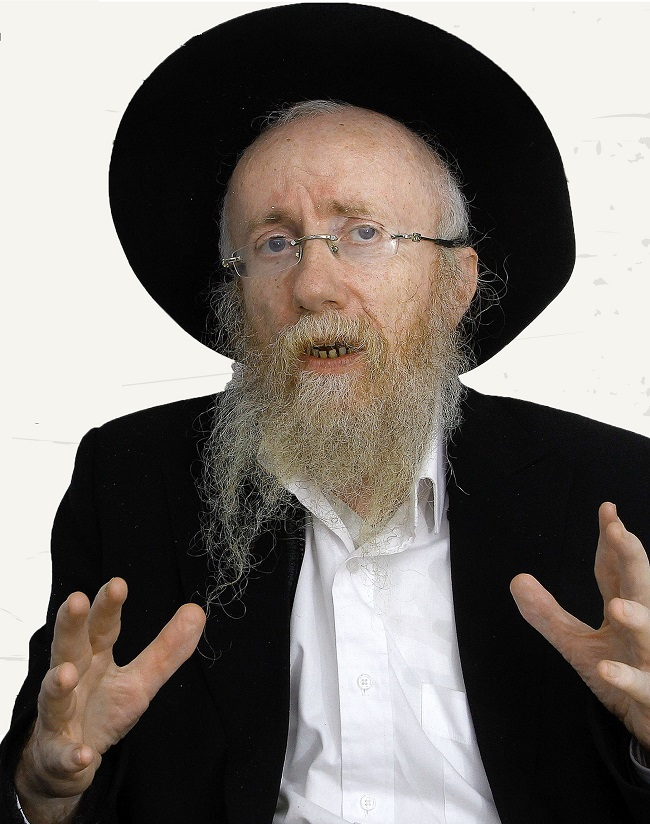

ב’דבר מלכות’ השבועי אנו לומדים על גישתו התקיפה של יהודה מול יוסף. מדוע לקראת הגא
ב’דבר מלכות’ השבועי אנו לומדים על גישתו התקיפה של יהודה מול יוסף. מדוע לקראת הגאולה צריכים לאמץ את גישתו של יהודה, וכיצד לימוד ענייני הגאולה מסייע לנו להרגיש חירות נפשית? ואיך כל זה קשור להתבטאויותיו של נשיא ארצות הברית מחד, והחלטות האו”ם מאידך? >> שיחה מרתקת עם הגה”ח ר’ זלמן נוטיק, משפיע בישיבת “תו
ב’דבר מלכות’ השבועי אנו לומדים על גישתו התקיפה של יהודה מול יוסף. מדוע לקראת הגאולה צריכים לאמץ את גישתו של יהודה, וכיצד לימוד ענייני הגאולה מסייע לנו להרגיש חירות נפשית? ואיך כל זה קשור להתבטאויותיו של נשיא ארצות הברית מחד, והחלטות האו”ם מאידך? >> שיחה מרתקת עם הגה”ח ר’ זלמן נוטיק, משפיע בישיבת “תומכי תמימים” בראשון לציון, וממשפיעי אנ”ש בירושלים

באותם ימים אמנם פעלה בתל אביב ישיבת “אחי תמימים” בה למדו כמאה תלמידים ובירושלים פעלה ישיבת “תורת אמת”, אך שני מוסדות אלו לא יכלו לקלוט את הנערים והבחורים שהגיעו זה עתה מרוסיה, מה גם שכבר באותה שעה אותם עולים חשבו גם על תלמידים נוספים שבבוא היום יחפשו אף הם מוסדות לימוד.
בתחילת חודש שבט תש”ט, התיישבו שלוש עשרה משפחות חב”דיות בקצה העיר לוד, בסמיכות לתחנת הרכבת. בין המשפחות נמנו משפחת הרב שרגא מלך קפלן, הרב אריה זאב ליפסקר, הרב דב בעריש רוזנברג ועוד. משפחות אלו השתכנו בבתים שהיו שייכים למשפחות ערביות שבעת מלחמת השחרור נמלטו מהעיר. התיישבות זו הייתה הגרעין שממנו צמח בעתיד שיכון חב”ד ומוסדותיו.
החסידים שאלו את הרבי האם הם יכולים לפתוח ישיבה נוספת, ולאחר שהתקבל האישור לפתוח, חיפשו החסידים מבנה מתאים שישמש ללימודי הישיבה. זה כלל לא היה פשוט.
באחד הימים הגיע ר’ זושא וילימובסקי לביקור בקהילה החב”דית הצעירה בלוד. פתאום שם לב לבניין נטוש בן שלוש קומות העומד בפרדס ממערב לשיכון. בניין זה שימש בעבר כבית מלון קטן. לדידו בניין זה התאים בדיוק לצרכי הישיבה. מבלי לשאול יותר מדי שאלות ומבלי כמובן לקבל רישיון, הוא נכנס לבניין, נעל את דלת הבניין והכריז על הקמת ישיבת “תומכי תמימים” במקום… תוך ימים ספורים הביא ר’ זושא ריהוט מינימאלי וכך הוקמה הישיבה, כאשר הרב שרגא מלך קפלן משמש כר”מ הראשון. הכינוי שהודבק לישיבה היה “הפרדס” מפני היותה שוכנת במרכז פרדס התפוזים.
כעבור שבועיים הגיעו אל הבניין שני פקידי סוכנות שבאו לבדוק את המבנים שנותרו לאחר מלחמת השחרור. אלה הביעו תדהמתם ממה שעיניהם רואות - ישיבה במלוא הדרה שוכנת בחדרי המבנה. התדהמה התחלפה בכעס, שכן בנין זה יועד מלכתחילה להיות מרכז קליטה לזוגות צעירים. הבחורים שישבו במקום ולמדו הסבירו להם שבמקום פועלת ישיבה לכל דבר. “מי התיר לכם זאת?” שאלו אנשי הסוכנות, והתלמידים שלא ידעו דבר על עסקי רשיונות, שלחו אותם לר’ זושא שכיהן כמנהל הישיבה. הפקידים פנו אל ר’ זושא שישב באותה עת במשרדו במקום. לשאלתם מי נתן לו רשות להכניס תלמידים למבנה הזה, ענה ר’ זושא בביטחון גמור שיש לו אישור מהמושל הצבאי של האיזור. פקידי הסוכנות ביקשו לראות את האישור, ור’ זושא אמר להם שהאישור נמצא בחדר הסמוך. מבלי להשתהות, קם ממקומו בביטחון רב והחל ללכת לכיוון החדר השני (מבלי, כמובן, שהיה אי פעם אישור שכזה…) כששמעו הנציגים את נימת דיבורו הבטוחה, ויתרו על הצגת האישור, ובהאמינם לו, עזבו את המקום. כך הוקמה ישיבת תומכי תמימים המרכזית בארץ ישראל.
שני סוגים של ‘תוקף יהודי’
את הסיפור הזה מביא הרה”ח הרב זלמן נוטיק, משפיע בישיבת “תומכי תמימים” בראשון לציון, ומהמשפיעים בירושלים, כאשר הוא בא לחדד את הרעיון המרכזי של ה”דבר מלכות” השבועי, לפרשת ויגש.
“הנקודה החשובה והמרכזית של ה’דבר מלכות’ השבוע, זה שיש שני מושגים של תוקף יהודי בזמן הגלות”, מסביר הרב נוטיק בשפה בהירה, בדיוק כפי שהוא יושב בשיעורי חסידות או בהתוועדות חסידים, ומסביר עניינים עמוקים בחסידות, בבהירות ובחן.
“ישנו סוג של תוקף בו יהודי קודם כל בודק את השטח; הוא בודק מה החברה סביבו אומרת, ומה החוק קובע, ואיך הנורמה מסביב. לאחר שהוא בודק ומוודא שהרצון שלו משתלב היטב בחוקי החברה או המדינה - או אז הוא מבצע את הפעולה. אולם אם הוא מרגיש שכללי המשחק שמסביב אינם עולים באותו קו עם הרצון שלו, אז הוא מתקפל והולך לו כשהוא מוותר על הרעיון שלו”.
לפני שהרב נוטיק ממשיך, הוא מבהיר שמדובר ברצונות של אדם באשר הוא, ולא בעניינים מובהקים של תורה ומצוות, “כי ברור שיהודי שומר מצוות רוצה לקיים מצווה או הנהגה שלא עולה בקנה אחד עם חוקי המדינה, הוא אינו מתחשב בזה והוא מקיים את מצוות בוראו. אבל באופן כללי, זה הסגנון של אותו אדם - שהמדינה והעולם שמסביב תופסים אצלו מקום חשוב, והוא מתנהל על פיהם”.
יש עולם, או אין עולם?
תוכל לתת דוגמה?
בהחלט. בשנים האחרונות היה מאבק בארץ ישראל, כאשר משרד החינוך ביקש להכריח את מוסדות החינוך החרדיים לשלב לימודי חול בתכנית הלימודים. או כאשר ישנה דרישה מצד נציגים של היועץ המשפטי לממשלה לשלב נשים בוועדות רבניות, כמו בית הדין הרבני או במערכי גיור, או ברבנות הצבאית וכדומה. מה עושים במקרה כזה? ובכן, ישנה גישה שאומרת שאין מה לעשות, אנחנו בגלות ועדיין הגאולה לא הגיעה, ולכן בוא ננסה לבדוק מה אומרת ההלכה וננסה לסנכרן בין קביעת ההלכה לגזירות החדשות. רק אם נרגיש במוחש שהמציאות סותרת את גדרי ההלכה לגמרי ואין כל אפשרות למצוא דרך גישור, או אז נעמוד על העקרונות שלנו. אבל עצם הגישה הפנימית היא: יש עולם ויש מציאות וצריך להתחשב בגדרי המציאות.
התוקף היהודי מהסוג השני, הוא אחר: אין עולם! אנחנו אמנם בגלות ויש שלטון ויש כללים, אבל הגישה היא שלא מתפשרים ולא מתאימים את עצמנו לעולם, אלא אומרים את דבר ה’ בגאון ובעוז מבלי להתחשב במה שהשלטון (לדוגמה) רוצה (כמובן, כשזה עולה בסתירה עם ערכי היהדות, ולא בסתם מקרים).
התוקף הראשון הוא תוקף של יוסף הצדיק, והתוקף השני הוא של יהודה.
יוסף גם היה אדם תקיף. הוא עסק בהפצת אלוקות מבלי לפחד, והראיה לכך שהוא מל את המצרים ודאג להחדיר ולהטמיע את ערכי האמונה בתוך ערכי משרד החינוך המצרי. אבל נקודת המוצא שלו הייתה לשאול קודם כל את פרעה אם זה מתאים ומסתדר עם חוקת מצרים. יוסף החדיר אלוקות בעולם, אך עם זאת התחשב בעולם ועם הכללים של מצרים.
יהודה, לעומתו, כאשר הוא ניגש ליוסף, “וַיִּגַּשׁ אֵלָיו יְהוּדָה”, הוא ידע שהוא נמצא בגלות, ושהאיש העומד מולו (אותו חשב למצרי) יש לו כוח עצום ושהוא יכול להמיתו ברגע אחד, אך יהודה לא התחשב בזה ואמר במילים מאד ברורות - אני לא יכול לשוב לאבא שלי בלי הילד. אם אשאיר את בנימין כאן, הוא יגדל כמו גוי ועל כך אינני יכול לוותר. לא מעניין אותי כמה אתה חזק, ועד כמה אני בגלות ועד כמה גדולה הסכנה. יהודה אמר את האמת כפי שהיא, בלי להתחשב בסיטואציה שהייתה מסביב.
אני מבקש רגע לחדד את הדברים. על פי דבריך, יוסף היה ותרן ופשרן?
לא זו הכוונה. עניינו של יוסף היה להחדיר אלוקות בתוך גדרי העולם, בעוד אחיו, שהיו רועי צאן, היו בדרגה שלמעלה מן העולם. עבודתו של יוסף - בפרט בכך שירד ראשון למצרים, ערוות הארץ - הייתה להחדיר אלוקות בתוך גדרי העולם, ולשם כך היה צריך כביכול לצמצם את עצמו ולהתחשב במציאות של העולם. המעלה שלו למעשה הייתה גם החיסרון. כיוון שליוסף (ולא לאחיו) היה כוח להחדיר אלוקות בעולם, עליו היה להכיר היטב את העולם כדי לדעת לנצל נכון את הכלים של העולם ולהשתמש בהם למטרתו - החדרת אלוקות. זה כמובן גרם לו שהעולם יתפוס אצלו יותר מקום.
כשאתה עושה את הבידול הזה, אני לא יכול שלא לצטט את הפסוק מתהלים “רֹעֵה יִשְׂרָאֵל הַאֲזִינָה נֹהֵג כַּצֹּאן יוֹסֵף”, ממנו משמע שכל יהודי הוא בבחינת “נוהג כצאן יוסף” וזו עבודה שמתאימה לכל יהודי.
“אכן, נכון שדוד המלך מכנה כל יהודי בשם ‘יוסף’, אך זה בגלל המעלה המרכזית שהייתה בו: יכולת להחדיר אלוקות בעולם, וזה אכן תפקידו של כל יהודי באשר הוא.
אבל עם כל החשיבות שבזה, יש ביהודה מעלה שאין ביוסף, שהוא נהג באופן שלא התחשב כלל בחוקי העולם, אלא אמר את דברו בגאון ללא חשש.
טועמים כבר מתקופת הגאולה
את הרעיון של שני סוגי תוקף, מרחיב הרבי בשיחת קודשו בשבת זו בשנת תשנ”ב. כאן מתקדם הרבי שלב אחד קדימה, ואומר כי העובדה שלעתיד לבוא מלך המשיח יבוא דוקא משבט יהודה, קשורה לאותו תוקף של יהודה שעה שניגש ליוסף.
והרבי מבאר: זה שלעתיד לבוא כל הגויים יכבדו את היהודים וכל אומות העולם יקיימו שבע מצוות בני נח, ושהגדולה שלהם תהיה מתוך זה שהם מכבדים את עם ישראל - כל זה בא כתוצאה מהתוקף המיוחד של יהודה, ולא מסוג התוקף שהיה ליוסף.
המצב הזה שבו יהודי נמצא בגלות, כשהוא מודע להגבלות הגלות והעולם שסביבו, אך יחד עם זה הוא אינו מתחשב בגדרי העולם ולא נותן להם חשיבות מכיוון שהוא יודע שיש לו בעל הבית אחד בלבד - הקב”ה והתורה הקדושה. התוקף הזה, הוא בעצם מביא את הגאולה ואת גילויו של מלך המשיח שהנו משבט יהודה ומזרע דוד, “ודוד עבדי נשיא להם לעולם”. כי צריך שיהיה ניכר ונרגש איך שיהודי הוא–הוא המציאות האמיתית של העולם בעוד שכל שאר אומות העולם נועדו לשמש ולשרת אותו.
הרבי מציין בשיחה, שלמעשה כבר היום אנחנו טועמים מאותה תקופה של הגאולה, כאשר רואים יום יום איך יהודים משיגים פרנסה בקלות יותר מכפי שהיה בדורות קודמים, ורואים במוחש איך אומות העולם מכבדים את עם ישראל יותר מכפי שהיה במשך אלפיים שנות גלות. אתה פוקח את אוזניך - מחדד הרב נוטיק פן אקטואלי - ושומע כיצד נשיא ארה”ב הנבחר מדבר בחיבה מופגנת כלפי העם היהודי וזכויותיו, אתה למד עד כמה המצב של עם ישראל הוא טוב בהרבה.
כל זה תוצאה של מסירות הנפש של עם ישראל במשך הדורות. העובדה שלמרות הגלות הם התנהגו באופן של תוקף יהודה, בלי להתחשב באומות העולם או עם גדרי העולם, תוקף יהודי נצחי שעושים את רצון ה’ באופן של ‘אין עוד מלבדו’ - זה בעצם הדבר שגורם לכך שכבר היום הגענו למצב הזה שאומות העולם מכבדים את עם ישראל וטועמים כבר את טעם הגאולה כאשר מרגישים את התפשטות מלכותו של מלך המשיח.
זה לא אני אומר, אלא הרבי אומר זאת מפורשות בשיחה של פרשת ויגש תשנ”ב, שאומות העולם מסייעות כבר לעם ישראל ומכבדות אותו, ומיום ליום גוברת ההערכה והכבוד שלהם לעם ישראל, וכל זה תוצאה של אותו תוקף מיוחד של יהודה מול יוסף שייצג את מצרים. זהו תוקף אמיתי שאין בו התחשבות כלל בגדרי העולם.
בין מציאות אמיתית, למציאות מדומה
הזכרת את טראמפ שמכבד את עם ישראל, ובאותה נשימה אני יכול להזכיר לך את החלטת מועצת הביטחון של האו”ם שבה כל המדינות היו נגד עם ישראל. על איזה כבוד לעם ישראל אתה מדבר? זו התחלה של טעם הגאולה?
אומר זאת כך: יש שני סוגי מציאויות, מציאות אמיתית ומציאות מדומה, וצריך לדעת להבחין ביניהן.
המציאות האמיתית היא שיותר ויותר מדינות בשנים האחרונות קושרות קשרים עם ארץ ישראל. כמות ההשקעות בארץ ישראל מצד מדינות זרות וגופים זרים מכפילה את עצמה מידי כמה שנים. המהפכה הזאת עוברת אפילו במדינות ערב שמשפרות את יחסיהן עם ארץ ישראל. המציאות היא שאומות העולם יותר ויותר מתבטלות ועוזרות לעם ישראל.
יש גם את המציאות המדומה, לא אמיתית, בדמות מועצת הביטחון בהיותה גוף ששייך לעולם הישן שבו האנטישמיות שולטת. מה שהם עשו כעת נגד ארץ ישראל, זה פרפורים אחרונים של הגלות, מעין שירת הברבור. אין זו מציאות אמיתית אלא מדומה.
כך היה גם בגאולת מצרים, כאשר משה רבינו הגיע למצרים לגאול את ישראל - והנה רואים שלא רק שאין גאולה, אלא הקושי הלך וגבר עד שמשה רבינו עצמו צעק אל הקב”ה ‘למה זה שלחתני?’ אבל אנחנו יודעים שגאולת מצרים החלה מהרגע שמשה רבינו הביא את בשורת הגאולה, וזה שהקושי הכביד, זה היה רק מציאות מדומה שנראתה אמנם לעין, אבל מי שידע לקרוא את הזרמים התת–קרקעיים ידע שעצם בואו של משה לפני פרעה בתביעה לגאולה, זו הייתה תחילת ה’גאון יעקב’ והתוקף היהודי.
כך גם עם אדם חולה שיש לו חום גבוה; עצם החום הוא סימן טוב שהגוף נאבק עם החיידקים. אדם חכם יודע שהחום הוא צד בריא בגוף ולא צריך להתרגש ממנו.
גם במציאות הנוכחית צריך קצת הבנה, ואת ההבנה הזאת מקבלים על ידי לימוד עניני גאולה ומשיח.
להביא את העתיד - לתוך ההווה
דיברת קודם על מציאות בבחינת ‘יוסף’, שבו אדם מפחד מגדרי העולם ומתחשב בו. ואכן, אני מכיר לא מעט אנשים כאלה שמיישרים כל הזמן קו עם העולם שמסביב. יש בהם סוג של פחד וחשש ממה שקורה מסביב. אדם כזה, איך הוא יכול לפתח את האומץ הזה של בחינת ‘יהודה’?
אדם כזה, הוא למעשה אדם גלותי. זה מובן, כי כל עוד לא הגענו לגאולה השלימה, יש צורך במאמץ מיוחד כדי לחשוב במושגים גאולתיים.
הרבי עצמו התבטא על כך בשיחת שבת פרשת בלק תנש”א, ואמר שהוא רואה שהולך בקושי (“עס קומט אן שווער”) לחיות גאולה.
ואומר הרבי שהעצה לזה היא לימוד ענייני גאולה ומשיח. זו הדרך היחידה שמאפשרת ליהודי לחיות בחירות רגשית, תחושה גאולתית - גם ברגעים האחרונים של הגלות.
באמצעות הלימוד מתחברים לתקופה העתידה, שבה יש חירות רגשית, וליהודי ניתן הכוח להעתיק את אותה חירות רגשית מתוך העתיד - אל המציאות העכשווית של ההווה.
אנחנו מגיעים כעת מימי החנוכה, וישנה אימרה של השפת–אמת, על ההבדל בין חנוכה לכל החגים: בכל החגים, העבר מאיר לתוך ההווה. ואילו בחנוכה, האור הוא אורו של משיח (ולכן מדליקים שמונה נרות, שקשור עם הגאולה), והאור הזה מהעתיד - מאיר בתוך ההווה.
כך כאשר יהודי לומד ענייני גאולה ומשיח - הוא מפתח בהווה את אותו גאון יעקב והחירות הנפשית שתהיה בעתיד.
כאשר לומדים את שיחותיו של הרבי על תהליכי הגאולה - זה גם מסייע לנו להבחין במציאות האמיתית, שמובילה אל הגאולה השלימה, ולחיות בהתאם!